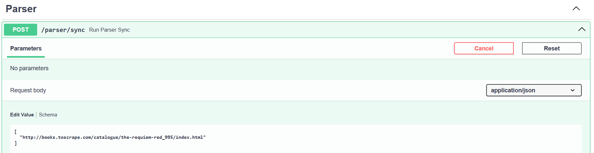

HTTP-интеграция парсера
В данной части реализуется синхронный вызов парсера из основного FastAPI-приложения.
Парсер вынесен в отдельный контейнер finance_parser_api, а основное приложение обращается к нему по HTTP.
Сервис парсера
Файл parser_api.py содержит отдельное FastAPI-приложение для парсера.
app = FastAPI(title="Parser API")
class ParseRequest(BaseModel):
urls: list[str] | None = None
@app.post("/parse")
def parse(request: ParseRequest):
result = parse_urls(request.urls)
return {
"status": "completed",
"items": result
}
Endpoint /parse принимает список URL-адресов. Если список не передан, используется заранее заданный список тестовых страниц.
Вызов парсера из основного FastAPI-приложения
В основном приложении был добавлен endpoint /parser/sync.
@router.post("/sync")
def run_parser_sync(urls: list[str] | None = None):
response = requests.post(
f"{PARSER_API_URL}/parse",
json={"urls": urls},
timeout=30
)
response.raise_for_status()
return response.json()
Основное приложение не выполняет парсинг напрямую. Оно отправляет HTTP-запрос в сервис parser_api, который работает в отдельном контейнере.
Логика парсинга
Парсер получает страницу книги, извлекает название и цену, после чего сохраняет результат в базу данных.
def parse_one_url(url: str) -> dict:
response = requests.get(
url,
timeout=30,
headers={"User-Agent": "Mozilla/5.0"}
)
soup = BeautifulSoup(response.text, "html.parser")
book_title = soup.find("h1").get_text(strip=True)
price_text = soup.find("p", class_="price_color").get_text(strip=True)
title = f"Покупка книги: {book_title}"
amount = parse_price(price_text)
comment = f"Спарсено со страницы: {url}"
save_transaction(title, amount, comment)
return {
"title": title,
"amount": amount,
"url": url,
}
Проверка через Swagger
Для проверки используется endpoint POST /parser/sync:

(.venv) PS C:\Users\admin\Documents\web\ITMO_ICT_WebDevelopment_tools_2025-2026\students\K3340\Sapozhnikov_Artem\lr3> docker exec -it finance_db psql -U postgres -d finance_final_db
psql (18.4 (Debian 18.4-1.pgdg13+1))
Type "help" for help.
finance_final_db=# SELECT id, title, amount, comment
FROM transaction
WHERE title ILIKE '%Requiem%'
ORDER BY id DESC;
id | title | amount | comment
----+--------------------------------+--------+------------------------------------------------------------------------------------------
65 | Покупка книги: The Requiem Red | 22.65 | Спарсено со страницы: http://books.toscrape.com/catalogue/the-requiem-red_995/index.html
Запись о книге появилась!